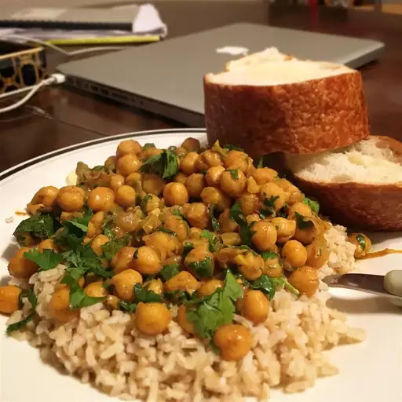

Chickpea Curry Recipe

This easy chickpea curry is made with canned chickpeas for a fast,
convenient vegan meal. Fresh ginger, garlic, and Indian spices add lots of
flavor.
This chickpea curry recipe is the perfect vegetarian weeknight dinner:
It’s full of flavor, easy to make with simple ingredients, and packed with
protein.
Ingredients
- Onions
- Oil
- Garlic
- Ginger
- Chickpeas
- Cilantro
Steps
- Cook the onion in oil.
- Stir in the garlic, ginger, and remaining seasonings.
- Cook for one minute, then stir in the chickpeas and their liquid.
- Cook until heated through, then remove from heat.
- Stir in cilantro just before serving.